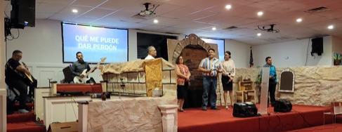
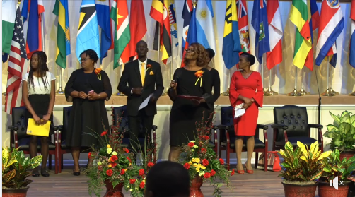

Anímate y Participa
Iglesia Tampa Norte
Sábado: 23 de Abril
Ellos nos traen toda la ProgramaciónUna fiesta espiritual "Juntos en Cristo" 
12th Sesión Regular SEC
1771 FL-20, Hawthorne, FL 32640Sólo para Delegados
Sábado: 23, domingo 24 Abril

Nuestros delegados por Emmanuel son:
Alexander Beltré, Elsy Jorge, Marelis Díaz, Dania Leyva, Dionis Leyva, Danis Leyva, Olga Lajara.
Alexander Beltré, Elsy Jorge, Marelis Díaz, Dania Leyva, Dionis Leyva, Danis Leyva, Olga Lajara.
Tarde de Temas Juveniles
Hablemos sobre asuntos actuales
Sábado 30 de Abril Comedor
Mes Festejando las Madres
Todo el mes de MayoCelebrándolo en grande

Musical dedicado a las Madres
Departamento de MúsicaSábado 7 de Mayo
Almuerzo dedicado a las Madres
Escuela Sabática AuspiciaSábado 7 de Mayo

Día de Celebración Juvenil
Predicador Joven InvitadoCarlos Antonio Alejandro
Sábado 4 de Junio


Congreso Mundial Adventista
Sólo para DelegadosJunio 6 al 11 / 2022

Mes Festejando los Padres
Todo el mes de JunioCelebrándolo en grande

Almuerzo dedicado a los Padres
Escuela Sabática AuspiciaSábado 18 de Junio

Nuestra meta
Conocer a Jesús y compartirlo
Aprender de él e imitarlo
Hasta que él venga

Nuestra otra Iglesia
Emmanuel Clearwater Spanish
2855 Haines Bayshore Rd
Clearwater Fl 33760